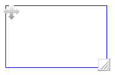

自分、または他の人が編集したレイヤーの、表示・非表示設定、内容の削除を行うことができます。
選択した範囲の描画を「移動・拡大・縮小」させることができます。
～操作方法～

右下部分を、上下左右にスライドさせることで、選択した範囲を拡大・縮小することができます。
「範囲を選択して画像登録する」からは、画面をドラッグして範囲を指定した、描画内容をスタンプとして登録しておくことができます。
登録したスタンプは、「登録した画像から選ぶ」から利用することができます。
好きな場所にテキストメモを挿入することができます。 画面をタップすると、メモアイコン が表示されます。アイコンをドラッグすると、位置を変更できます。 アイコンをタップすると、テキストの編集ができます。
ページに写真を貼付しておくことが出来ます。写真はカメラで撮影するか、アルバムから選択します。
添付したページには、画面右上に、アイコンが表示され、タップすると内容が確認できます。
Draw選択中にもう一度アイコンをタップすると、パレットを開くことができます。
「蛍光ペン」をオンにすると、半透明色で描画することができます。
↓アイコンをタップすると、ツールバーを非表示にすることができます。再度↑アイコンをタップすると、ツールバーが表示されます。
ツールバーの収納中は、画面左下をタップすると「undo」機能が利用できます。